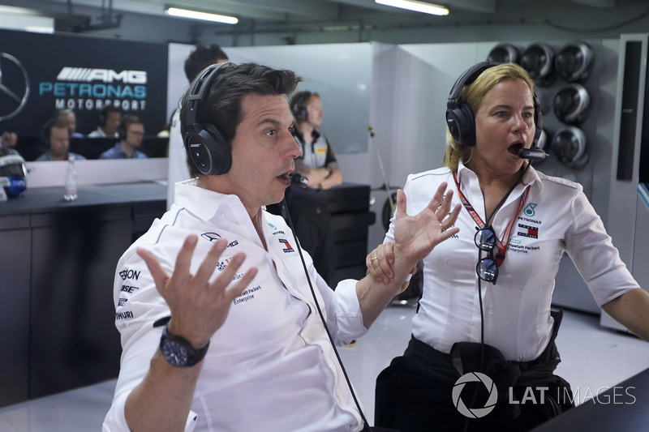

Chez L'écurie Mercedes Amg Petronas malgrés leur niveau hors-normes elles possedent aussi des defaults tels que les rivaliter entre pilotes avec Lewis Hamilton qui met une grosse, une enorme préssion a ses collegues pilotes a tels points que certains ont du quitter l'équipe a cause de la préssion de Lewis Hamilton ou de leur patron Toto Wolf directeur executif de Mercedes Petronas Amg.
Compilation des "Guerre de pilotes entre Lewis Hamilton et Nico Rosberg."
Mais l'un des seconds problèmes de Mercedes et leur stratégie qui leur vaut beaucoup de points dans le chompionnat du monde de formule 1 par exemple en 2017 lors du grand prix de Monaco, lors d'une safety car l'ingénieur de Lewis demande au pilote Britannique de rentrer au stand alors qu'il pouvais rester sur piste, cette erreur a couter la victoire a l'une des plus prestigieuse course de l'année pour le pilote et l'équipe.
Source: Motorsport.com .